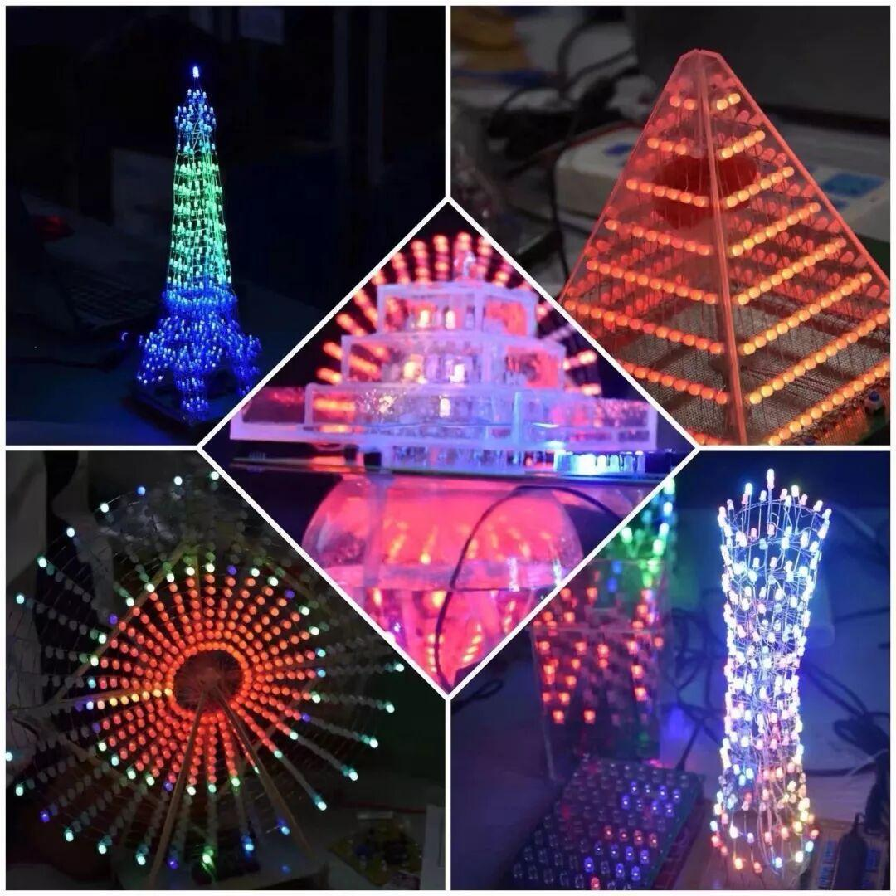
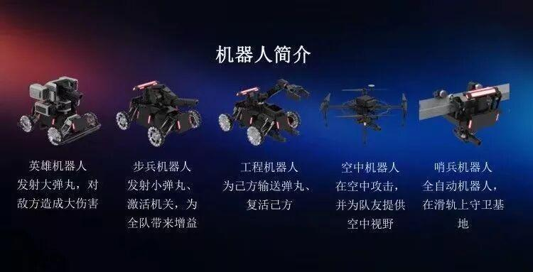
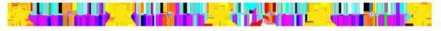
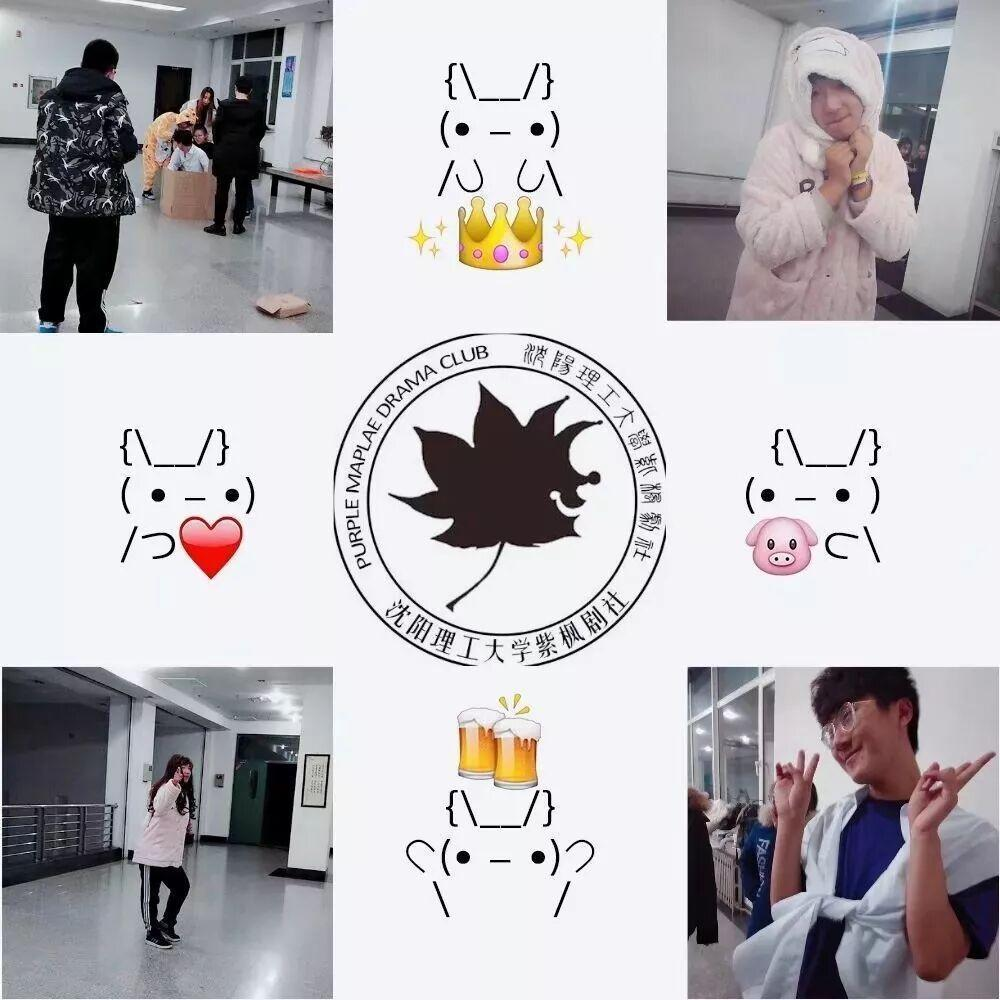
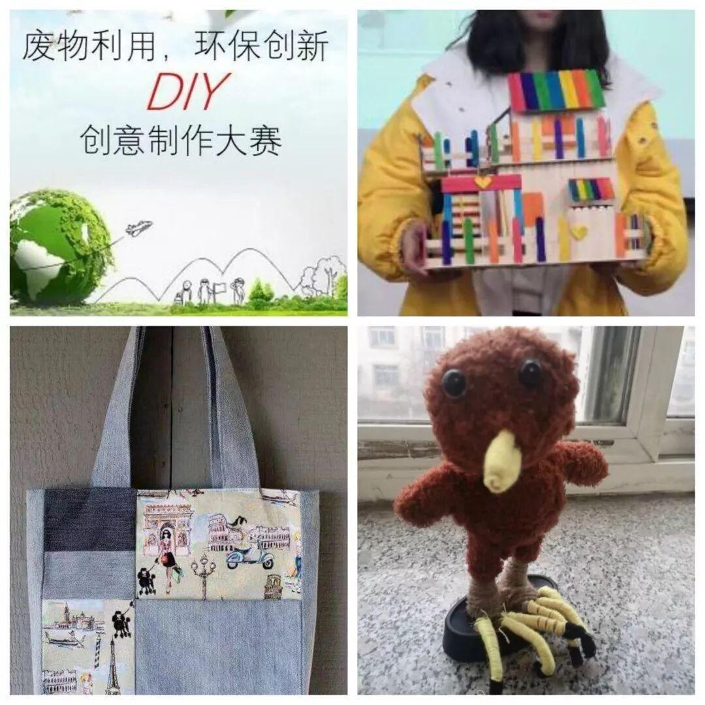
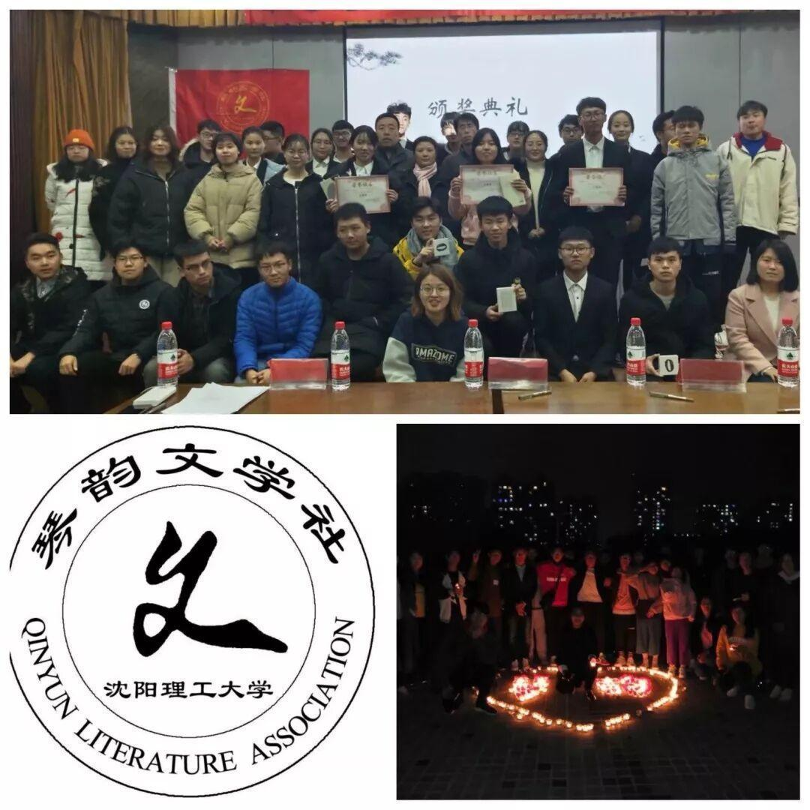
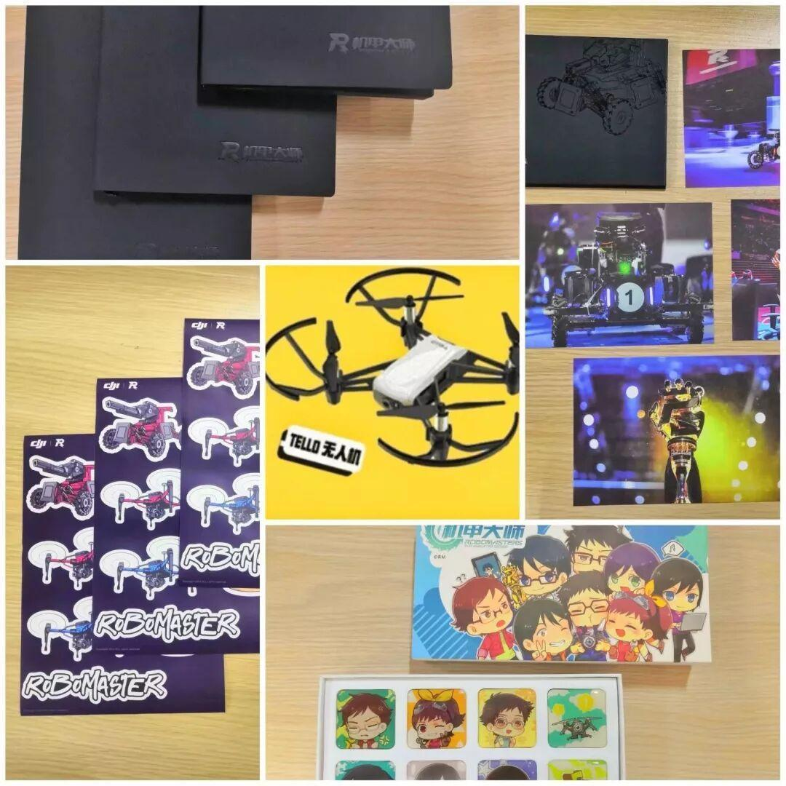
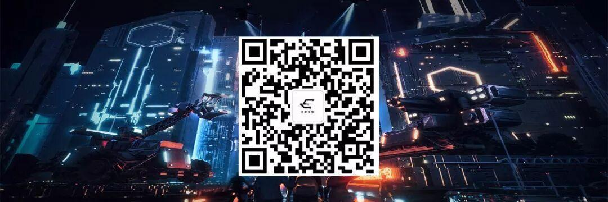

Ambition战队新车发布会暨沈理电协礼物设计大赛展示会
这次借着礼物设计大赛展示会的四月风，我们有幸邀请到、紫枫剧社、琴韵文学社、绿色方舟环保协会三大社团一起进行联谊活动！这是科技，文学，艺术与生活的交响乐！
艺术与技术的结合
是我们的礼物大赛作品展示——LED的华丽，
是Ambition战队新车发布——战车的炫酷。



惊心动魄的心跳之旅
是紫枫剧社送给大家的开场表演——《一夜心跳》
(表演时间18:00)

引人注目的小巧精致
是绿色方舟环保协会的废物利用，环保创新——DIY创意作品展。
 | |||
文墨书香的沁人气息
是琴韵文学社的传承——传扬经典文学互动
(开始时间19:00)


本次活动除了让你拥有独特体验
更有大把福利等着你:
首先是电协的抽奖活动！
是的，没有抽到无人机的小伙伴们，
你们的机会又来了！
微信扫描二维码
关注公众号
回复“沈理RM”参与抽奖活
抽奖开始时间：4月17日
结束时间：4月23日
领奖时间：4月19-24日
16：30-21：30
领奖地点：文体中心210
回复沈理RM


本周周五(4月19日) 18:00
文体中心
你带着心
我带着奖品
我们不见不散
ps：礼物数量有限，先到先得呦！
更多信息欢迎扫描下方二维码
进入沈理电协2018
最后，在社团文化月的赛场相约哦

图片：电子技术与应用协会
绿色方舟环保协会
紫 枫 剧社
琴韵文学社
文字：张诗梦
排版：王颢然